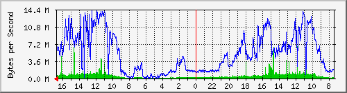

PERISUR-VIADUCTO
| System:MRTG | Core Perisur |
| Maintainer:dangeles@finanzas.cdmx.gob.mx | |
| Description: | TenGigabitEthernet1/5 Viaductono sw |
| ifType: | ethernetCsmacd (6) |
| ifName: | Te1/5 |
| Max Speed: | 125.0 MBytes/s |
| Ip: | No Ip (No DNS name) |
Estadísticas actualizadas el Miércoles 16 de Junio de 2021 a las 16:45,
'Core_Perisur.finanzas.df.gob.mx' ha estado funcionando durante 434 days, 21:33:09.
Gráfico diario (5 minutos : Promedio)

|
Máx |
Promedio |
Actual |
| Entrante: |
6756.5 kB/s (5.4%) |
688.1 kB/s (0.6%) |
683.5 kB/s (0.5%) |
| Saliente: |
14.2 MB/s (11.4%) |
5183.7 kB/s (4.1%) |
5357.2 kB/s (4.3%) |
Gráfico semanal (30 minutos : Promedio)
|
Máx |
Promedio |
Actual |
| Entrante: |
3145.2 kB/s (2.5%) |
745.7 kB/s (0.6%) |
1426.3 kB/s (1.1%) |
| Saliente: |
13.3 MB/s (10.7%) |
7298.9 kB/s (5.8%) |
5809.5 kB/s (4.6%) |
Gráfico mensual (2 horas : Promedio)
|
Máx |
Promedio |
Actual |
| Entrante: |
5050.3 kB/s (4.0%) |
471.1 kB/s (0.4%) |
1470.3 kB/s (1.2%) |
| Saliente: |
11.6 MB/s (9.3%) |
3921.0 kB/s (3.1%) |
8315.0 kB/s (6.7%) |
Gráfico anual (1 día : Promedio)
|
Máx |
Promedio |
Actual |
| Entrante: |
1764.4 kB/s (1.4%) |
367.3 kB/s (0.3%) |
602.0 kB/s (0.5%) |
| Saliente: |
10.2 MB/s (8.2%) |
2094.7 kB/s (1.7%) |
4455.1 kB/s (3.6%) |
| VERDE ### |
Entrante:coming Traffic in Bytes per Second |
| AZUL ### |
Saliente:going Traffic in Bytes per Second |